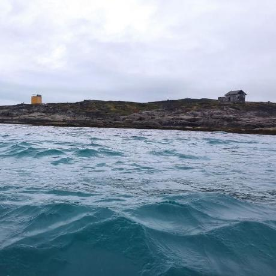

I am a member of the Cilium project. I work on BPF in a few places: the Cilium datapath and load balancer, the BPF subsystem of the Linux kernel, and the BPF backend of LLVM.
Lately I have been working on C++ support for BPF programs, including a small library of my own, cpp-bpf.
The best way to reach me is by email: skokovmaksimevg@gmail.com. My kernel commits are here, and I am also on Mastodon.